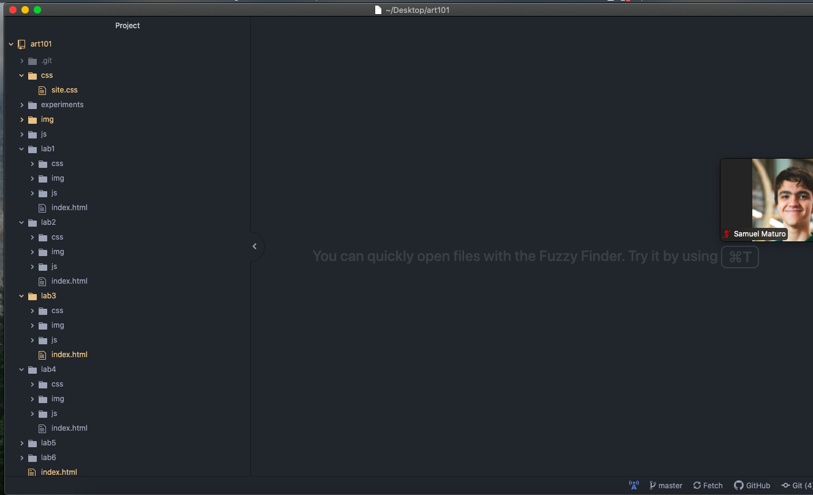
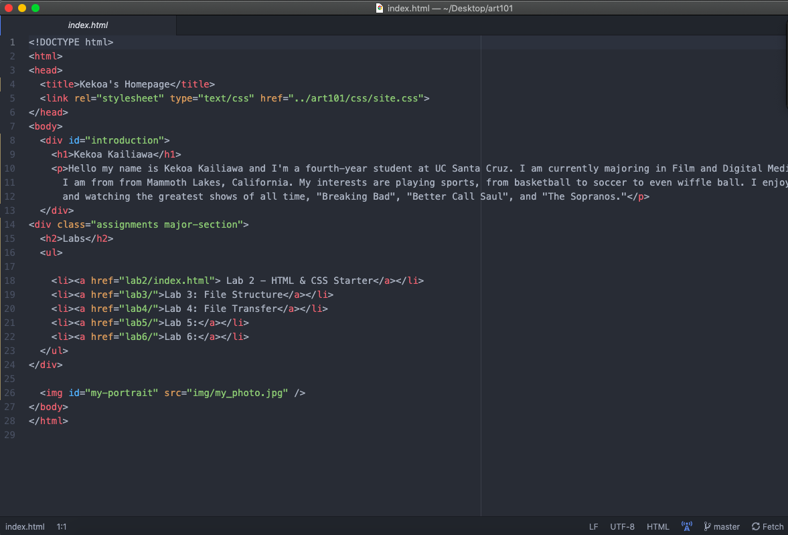
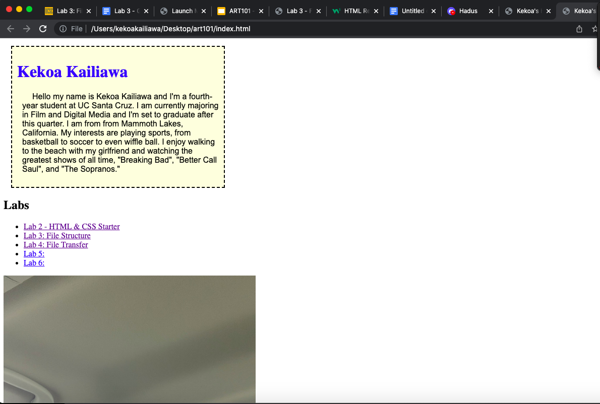

The subject of this lab was to create a local file strcuture on my compter and add index.html files. I also started working on my website.
The most challeging part of this lab for me was the actual typing process of the HTML files. The HTML tags and how to close them were tricky at first but I got a hang of it once I kept doing it over and over again.
Here are the screenshots that we turned in for this lab:
  